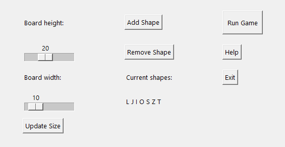
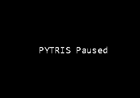

PYTRIS on Tetrise moodi mäng, kus saab määrata oma mänguvälja suurust ja lisada oma kujundeid!
Jälgi mängu ajal oma kustutatud ridade arvu paremas servas! Samuti näed ka järgmist kujundit, et planeerida oma käigud ette!

Vali menüüst endale sobiv mänguvälja suurus ja kujundid
Kasuta nooli et kujundeid liigutada! Rohkem teavet klahvide kohta saad menüüst!
Kui õppejõud palub panna mäng kinni, saad kasutada pausi funktsiooni ja jätkata hiljem!
